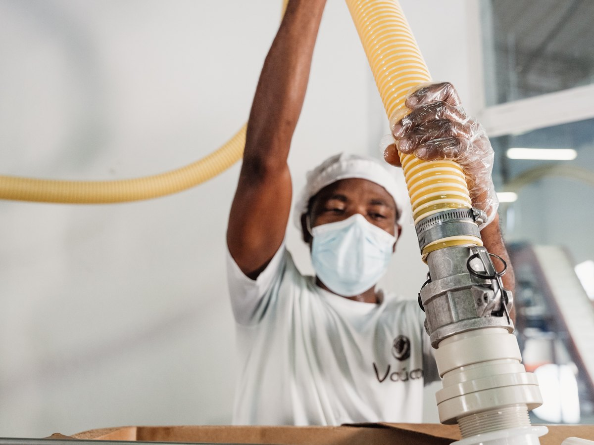
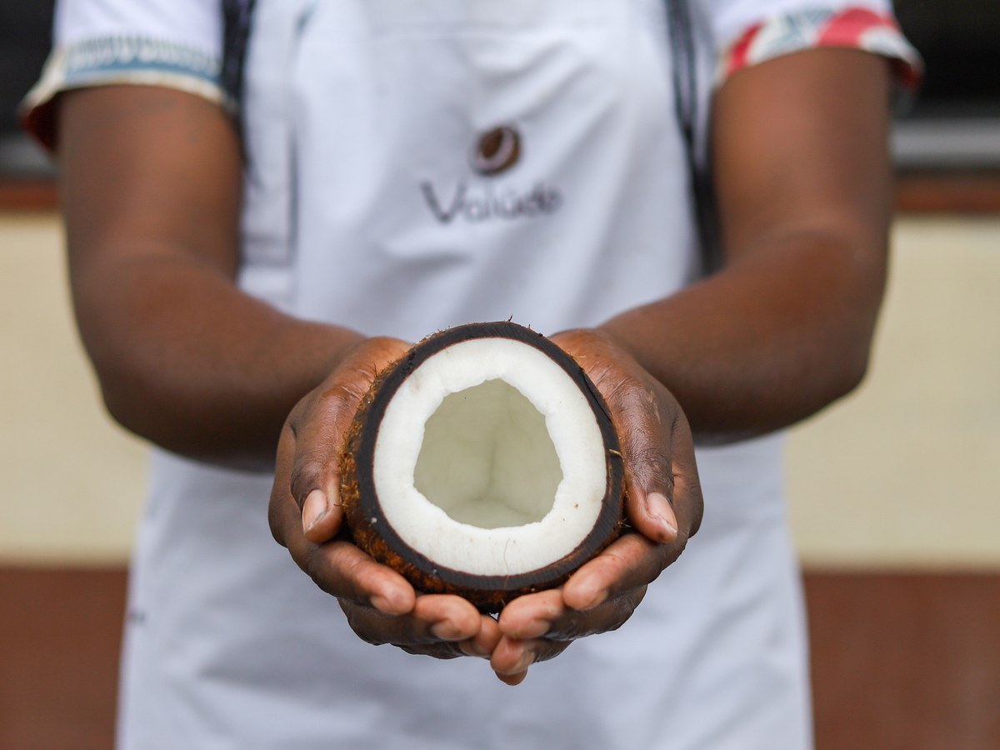

Nous relions ce qui se construit à l'origine à ce qui répond réellement aux attentes du marché. Une expertise qui va de la filière au produit fini, avec une même exigence de qualité, de traçabilité et de maîtrise.
Une matière première ne crée de valeur que si elle sert un produit et un marché réels. C'est cette conviction qui guide notre approche : comprendre l'origine autant que le débouché, pour ne jamais dissocier la matière du produit qu'elle doit devenir.
Chez Valúdo, la filière, le produit et le marché se construisent ensemble.
Ce que nous maîtrisons, de la filière à la logistique.
Nous pilotons chaque projet dans sa globalité, en nous appuyant sur nos propres outils, nos équipes et des partenaires sélectionnés selon les filières.
Sélection, structuration et sécurisation des origines, au plus près des producteurs et des partenaires locaux.
Pilotage des process pour transformer la matière jusqu'au grade et aux spécifications attendues.
Contrôles, analyses et documentation adaptés aux exigences de chaque marché.
Du vrac industriel jusqu'au produit fini, selon les formats et les besoins de nos clients.
Organisation des flux, stock européen et solutions logistiques pour garantir disponibilité et réactivité.
À São Tomé-et-Príncipe, Valúdo exploite directement son outil de transformation. Cette expérience industrielle nous donne une compréhension concrète des rendements, des process, des contraintes qualité et des réalités quotidiennes de production.
Nous appliquons aujourd'hui ce savoir-faire au développement de nouvelles filières, directement ou avec des partenaires industriels sélectionnés en Afrique, en Asie et en Europe.
Cette culture industrielle nous permet de regarder une matière au-delà d'une fiche technique ou d'un prix : nous savons comment elle est produite, transformée, contrôlée et conditionnée.

C'est là que Valúdo a construit sa première filière intégrée, de la collecte des noix jusqu'à leur transformation locale.
Notre expertise n'est pas liée à une seule matière. Elle repose sur notre capacité à comprendre une filière dans son ensemble : son origine, ses producteurs et collecteurs, ses process de transformation, ses enjeux qualité, sa logistique et ses débouchés.
De São Tomé au Mozambique, de l'Afrique de l'Ouest à l'Asie, chaque nouvelle origine répond à la même méthode : comprendre la matière et son environnement, sélectionner les bons partenaires et construire une chaîne de valeur fiable et traçable.
Des filières construites, pas des matières achetées sur étagère.
Nous partons de votre besoin pour construire l'offre la plus adaptée, puis mobilisons la filière, le produit et les partenaires nécessaires pour la rendre possible.
Usage, cible, spécifications, certifications, origine, volumes, format et positionnement attendu.
Sélectionner la matière, l'origine et les partenaires de transformation les plus adaptés au projet.
Définir le grade, les spécifications, le conditionnement et, lorsque le projet l'exige, aller jusqu'au produit fini en marque propre ou en marque blanche.
Qualité, conformité, documentation, disponibilité et logistique : réunir les conditions nécessaires à une mise sur le marché maîtrisée.
Valúdo réunit deux cultures complémentaires : celle du terrain et des filières, et celle des marchés et de la mise en valeur des produits. Nous pouvons ainsi partir de l'origine pour comprendre ce qu'une matière peut devenir, ou du marché pour déterminer ce qu'il faut construire à l'origine.
Ingénieur agronome et homme de terrain, Guillaume développe des filières agricoles en Afrique depuis plus de 12 ans. Des producteurs à la transformation, de la qualité à la logistique, il intervient au plus près des réalités locales pour structurer et piloter les filières de l'origine jusqu'au marché.
Avec une conviction : une filière se construit d'abord à l'origine.
Expert des marchés Bio depuis plus de 15 ans, David accompagne la construction, le positionnement et la mise sur le marché des offres. De la compréhension des attentes clients à la valorisation du produit, il relie les réalités du marché aux choix de gamme et accompagne leur traduction en offres claires et pertinentes.
Avec une conviction : un bon produit ne crée de valeur que s'il trouve sa place sur le marché.
Autour de cette direction, Valúdo s'appuie sur ses équipes en France et à São Tomé-et-Príncipe, ainsi que sur un réseau de producteurs, partenaires industriels et experts, pour accompagner chaque projet de la filière jusqu'au marché.